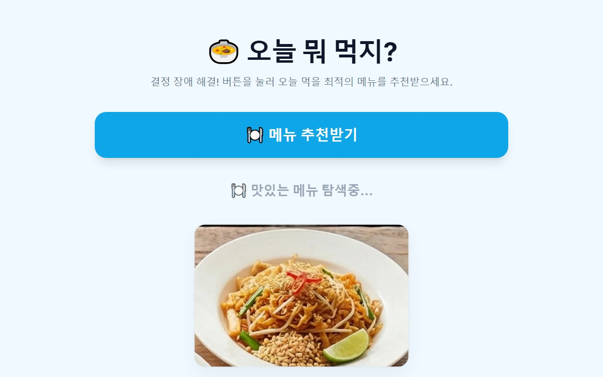
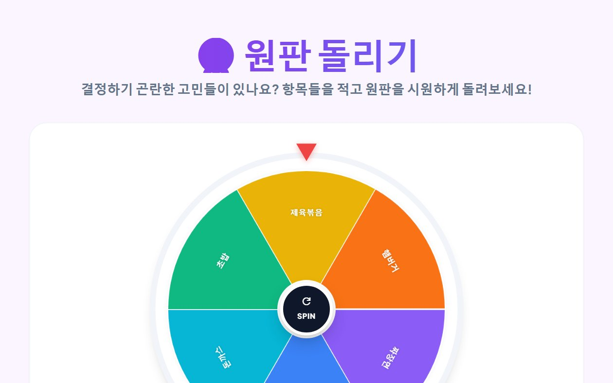
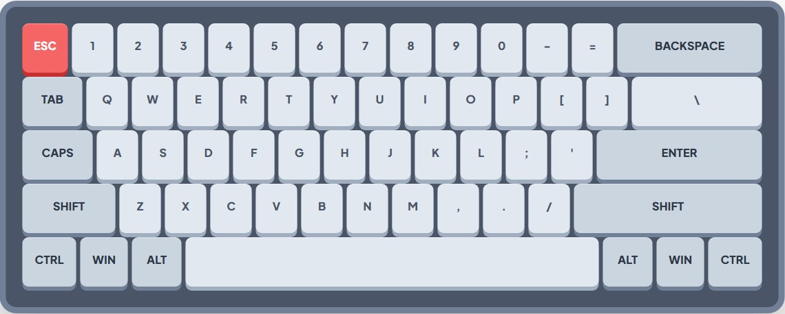
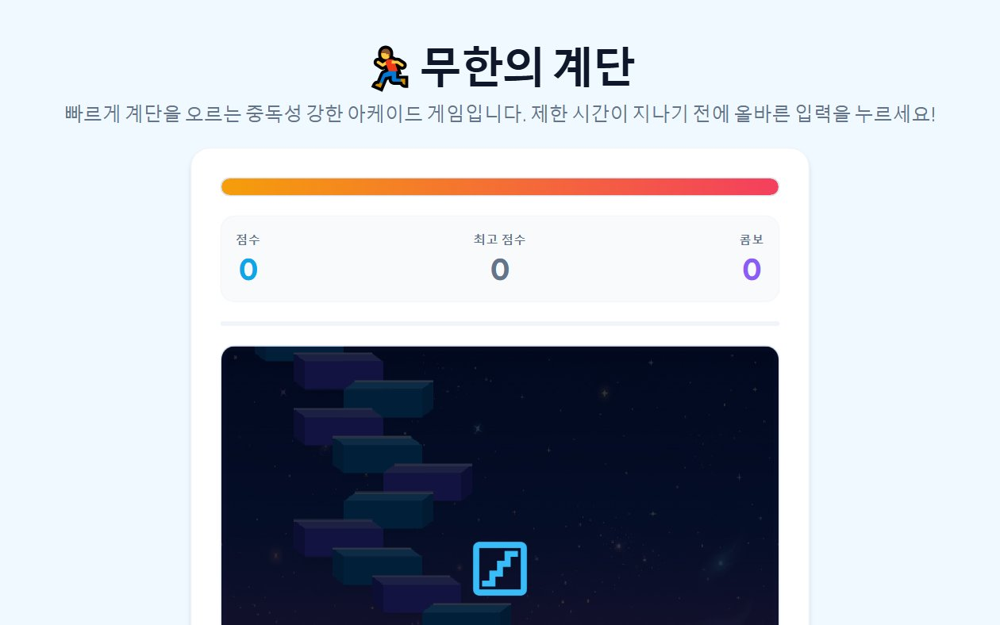
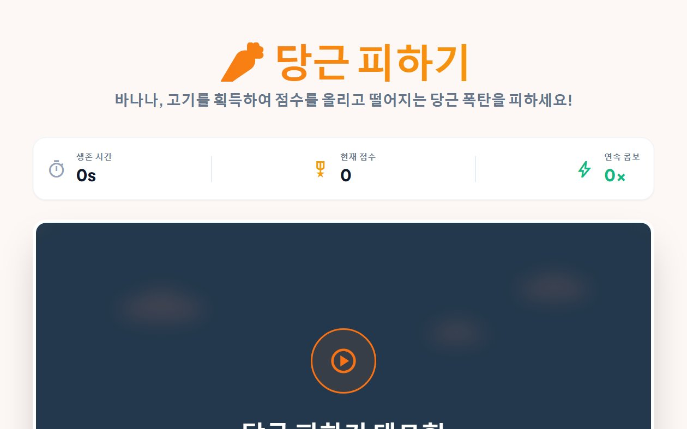
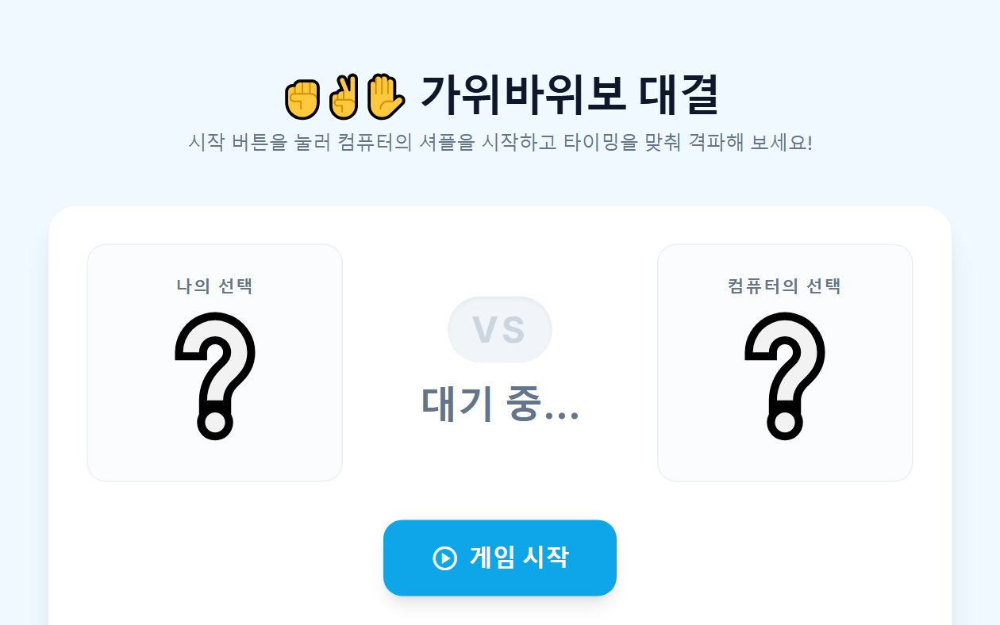

Smart Tools & Games for Your Everyday Life
Small tools for big tasks. Explore our collection of 10 fun and functional widgets and mini-games designed to make your day easier without any installation.
⚡ 디지털 툴 & 게임 포털
실생활에 필요한 계산 유틸리티, 결정 도구, 인터랙티브 게임 및 수학·과학 가이드를 만나보세요.
검색 결과가 없습니다.
다른 검색어를 입력하시거나 카테고리 필터를 변경해 보세요.
일상·오피스·SNS·AI·웹토이 100대 도구 컬렉션
전 세계 최신 트렌드를 망라한 100가지 기상천외하고 유용한 웹 도구를 순차 제작합니다. 지금 바로 직장인·공공·학생·군사·SNS·AI·심리·SF·유틸·토이 10대 테마 총 100개 도구를 지금 바로 무료로 체험해 보세요!
🎮 100대 도구 인터랙티브 아케이드
K-직장인 생존 키트
가짜 엑셀 몰컴 뷰어
사무실에서 상사 눈치를 피하며 몰래 웹서핑/유튜브를 즐기는 엑셀 위장 화면. F2키나 스페이스바로 즉시 화면이 전환됩니다.
K-직장인 생존 키트
10개 도구 완비눈치 빠른 칼퇴, 몰컴, 넵병 쿠션어, 법카 안분 등 대한민국 직장인의 생존을 위한 스마트 무기
가짜 엑셀 몰컴 뷰어
스페이스바를 누르면 0.05초 만에 결산 재무제표로 변신하는 완벽 위장 몰컴 뷰어.
넵병 탈출 & 쿠션어 번역기
분노의 속마음을 우아한 비즈니스 쿠션어로 5단계 강도 조절 변환합니다.
실시간 연봉 & 응가 머니 계산기
1초마다 계좌에 꽂히는 돈과 화장실에 앉아있는 동안 번 돈을 실시간 계산합니다.
칼퇴 카운트다운 & 핑계 생성기
칼퇴 잔여 밀리초 타이머와 야근 차단용 핑계, 긴급 가짜 전화 벨소리를 울려줍니다.
법카 한도 맞춤형 식대 조합기
법인카드 한도 내에서 잔액 0원에 도달하도록 메뉴를 최적 배낭 조합합니다.
영수증 N빵 & 정중한 송금 독촉장
단위 절사 정산과 돈 안 보내는 사람을 위한 정중하지만 뼈 때리는 독촉 멘트 생성.
회의록 버즈워드 & 불필요도 판독기
"얼라인/싱크" 허세 단어를 분석해 회의가 이메일로 끝났을 확률을 도출합니다.
비즈니스 영문 메일 톤 조절기
친절한 인사부터 최후통첩까지 4단계 톤앤매너로 프로페셔널 영문 메일을 완성합니다.
월급루팡용 가짜 OS 업데이트
윈도우 11/macOS 전체화면 업데이트를 띄워두고 떳떳하게 커피 마시러 가세요.
슬랙/잔디 일하는 척 상태메시지
자리 비움 중에도 열일하는 인상을 주는 프로페셔널 상태메시지 프리셋을 생성합니다.
공직 & 행정 생존기
10개 도구 완비공공기관 기안문체, 민방위 연차, 보도자료, 의전 좌석 배치, 감사 대비 등 공직자 필수 도구
공문서 말투 변환기
평범한 일상 문장을 완벽한 정부 공문서 개조식(1. 가. (1) (가)) 규격으로 변환합니다.
민방위·예비군 연차 계산기
전역 연도만 넣으면 예비군 동원/기본훈련 및 민방위 사이버 교육 면제 연도를 자동 계산합니다.
공공 행정 용어 순화 사전
난해한 일본식 한자어와 관공서 행정 용어를 알기 쉬운 우리말로 즉시 검색 및 퀴즈 풀이.
공식 보도자료 생성기
거창한 정부 수식어와 엠바고, 3단 개조식(배경·골자·기대효과) 표준 보도자료 생성.
연말 불용액 털기 장바구니
12월 말 남은 예산을 0원에 딱 맞추는 구매 품목 조합 및 공공 품의서 사유 자동 작성.
감사 사전 점검 & 방어 12계명
법카 주말 결제, 출장비 중복 청구 등 공공 감사 빈출 12대 지적 위험도 진단 및 소명서 빌더.
보고서 쪽수 마술사
HWP 보고서 마지막 장 달랑 세 줄 넘침 해결! 만연체 수식어 증폭 vs 개조식 압축 다이어트.
공공 의전 서열 좌석 배치도
VIP 관용차 탑승 위치, 회의실 헤드테이블, 기념촬영 단상 상석(중앙 우측) 시각 다이어그램.
청문회 답변 회피술 생성기
수사 중 회피, 기억 상실, 서면 보고, 종합 검토 등 4대 철벽 방어 매뉴얼 & 리얼 의사봉 사운드.
17:59 칼퇴 수호 & 포커페이스
18:00 마감 직전 난입 민원인 방어 멘트 매뉴얼, 평정심 유지 심호흡 서클 & 6시 정시 퇴근 팡파레.
캠퍼스 & Z/알파 세대
10개 도구 완비학점 복구, 조별과제 빌런 감지, 과제 분량 확장, 마감 패닉 HUD, 밈 번역기 등 대학생 생존 툴
학점 세탁 & 재수강 시뮬레이터
C+/D/F 학점 재수강 시 졸업 평점 역산! 대기업 컷(3.0), 장학금 컷(3.5) 골든크로스 예측.
팀플 무임승차 빌런 판독기
카톡 읽씹, 나무위키 복붙, 발표 전날 잠수 등 10대 빌런 행태 판독 & 교수님 제출용 기여도 산출표.
과제 마감 카운트다운 & 패닉 HUD
제출 10분 전 멘붕 방지 타이머, 화면 흔들림 아드레날린 부스터 & 지연 제출 긴급 메일 소명문.
Z세대·알파세대 슬랭 밈 번역기
Skibidi, Rizz, 중꺾마, 폼 미쳤다, 뇌절 등 꼰대어 ↔ 요즘 애들 신조어 완벽 상호 변환.
벼락치기 카페인 치사량 계산기
스누피 우유, 몬스터, 아메리카노 등 섭취 시 혈중 카페인 농도 및 손떨림·두근거림 한계 예측.
교수님 심기 경호 이메일 빌더
성적 정정, 공결 신청, 면담 요청 등 답장률 100%를 보장하는 극존칭 맞춤 메일 양식기.
레포트 만연체 분량 뻥튀기
5장 레포트 채우기 고통 해소! 빈약한 단문 문장을 고품격 학술적 만연체와 접속사로 3배 증폭.
캠퍼스 잔고 연동 점심 룰렛
통장 잔고 3,800원부터 15,000원까지 맞춤형 메뉴(편의점 vs 학식 vs 후문 맛집) 룰렛 추천.
대학생 통학 고통 지수 계산기
왕복 통학 시간, 지옥철 환승 횟수로 산출하는 '길바닥에 버린 시간' & 자취 vs 통학 손익분기점.
수능·공시 멘탈 훈련 HUD
OMR 마킹 타이머와 함께 시험장 실전 소음(시험지 넘기는 소리, 시계 초침) 멘탈 강화 훈련.
밀리터리 & 국방 생존기
10개 도구 완비전역일 소수점 티커, 관등성명 반사속도, 군대 짬밥 탈주율, 불침번 추첨기, 모스 부호 등
초정밀 전역일 소수점 티커
소수점 7자리까지 실시간 1초 단위로 올라가는 복무율 HUD & 남은 짬밥 그릇 수 계산기.
관등성명 반사속도 측정기
선임의 불시 "야!" 소리에 0.1초 만에 관등성명 복창! 당신의 군기 레벨(ms) 측정 테스트.
군대 짬밥 탈주 & PX 폭풍 지수
조순튀, 해빔소 등장 시 식당 탈주율(%) 및 PX 슈넬치킨 완판 확률 예측기.
불침번·당직 공평 난수 추첨기
새벽 02:00~04:00 헬 타임 불만을 종식시키는 암호학적 난수(CSPRNG) 공평 근무표 생성기.
모스 부호 번역기 & 비퍼
텍스트 ↔ 모스 부호 양방향 변환 및 800Hz 표준 통신 비프음 & 플래시 램프 점멸 시뮬레이터.
계급별 멘탈 상태 토이
이병(군기 100%)부터 병장(누워서 숨만 쉼), 전문하사의 유혹까지 계급별 심리 & 명대사 탐험.
밀리터리 줄루(Zulu) 시계
작전 표준시 Zulu(UTC 0), 한국군 KST(Item 타임), 24시간제 군용 레이더 컴파스 시계.
전술 위장(Camo) 패턴 생성기
대한민국 국군 디지털 화강암 패턴, 클래식 우드랜드, 멀티캠 절차적 생성 & PNG 다운로드.
전투식량 발열팩 타이머
발열끈을 당기는 순간 터져 나오는 수증기와 보글보글 끓는 소리! 10분 골든타임 완성 타이머.
예비군·민방위 40세 면제 캘린더
동원지정(1~4년) → 기본/작계(5~6년) → 민방위 사이버 → 40세 만료 종신 해방 타임라인.
SNS & 인플루언서 랩
10개 도구 완비인스타 캡션, 유튜브 어그로 제목, 스레드 스토리텔러, 가짜 실트 1위, 100만 팔로워 시뮬레이터
인스타 감성 카페 줄글 캡션
무채색 이모지, 성수·을지로 감성 시적 줄바꿈, 찰나의 순간을 담아내는 무드 캡션 빌더.
유튜브 어그로 썸네일 제목기
[충격], 결국 터졌습니다, 안 보면 100% 후회... 클릭률(CTR) 300% 폭발 제목 8종 세트.
스레드 바이럴 스토리텔러
'오늘 아침 지하철에서 문득 든 생각...', 끊임없는 엔터 줄바꿈과 자기성찰형 스레드체 변환.
가짜 X 실시간 트렌드 1위 렌더러
내 이름, 최애, 반려동물을 대한민국 X(구 트위터) 실시간 트렌드 1위 화면으로 완벽 합성.
쇼츠·릴스 30초 대본 압축기
후킹(0~3초) ➔ 3대 핵심 요약 ➔ 댓글 유도(CTA)로 어떤 주제든 딱 30초 숏폼 스크립트로 압축.
황금비 해시태그 최적화기
대형(100만+) · 중형(10만+) · 틈새(1만+) 3:5:4 황금 비율로 섀도우밴 위험 없는 클린 태그 추출.
인플루언서 4K 공식 사과문
검은 화면, 진지한 명조체, '수익 창출 중지 및 자숙' 등 법적 리스크를 회피하는 교과서적 사과문 빌더.
SNS 어그로·논란 유발 지수
글의 도파민 자극도, 반박 본능 자극 키워드, 댓글 전쟁(키배) 유발 확률 0~100점 판정기.
악플 정화 마법 필터
상처 주는 악플과 비난을 '츤데레 애정 공세' 및 '꽃밭 문장'으로 실시간 정화 변환.
100만 가상 도파민 시뮬레이터
초당 30개씩 쏟아져 내리는 좋아요·댓글·팔로우 알림 폭포수 & 무한 도파민 충전기.
AI & 미래 테크 샌드박스
10개 도구 완비프롬프트 강화기, 할루시네이션 생성기, 블라인드 튜링 테스트, QR 스테가노그래피, 정규식 샌드박스
AI 프롬프트 마법 강화기
단 한 줄의 허술한 질문도 고품질 AI 프롬프트 엔지니어링 구조로 즉시 업그레이드.
AI 할루시네이션 생성기
세종대왕 맥북 던짐 사건처럼 세상 당당하게 헛소리를 날조하는 AI 패러디 도구.
블라인드 튜링 테스트 퀴즈
화면 속 대화 상대가 사람인지 최신 AI 봇인지 3초 만에 맞춰보는 서바이벌 퀴즈.
AI 직업 대체 소멸 위험도 계산기
내 직무가 인공지능에 의해 대체될 위험 확률과 생존 전략 행동 강령 안내.
아시모프 로봇 3원칙 윤리 판정기
명령을 내렸을 때 로봇 3원칙 위반 여부를 스캔하고 회로 폭주를 감지하는 시뮬레이터.
QR 코드 비밀 메시지 스테가노그래피
겉보기엔 일반 웹사이트지만 비밀번호를 입력해야 숨겨진 메시지가 해독되는 암호 QR.
인스턴트 JSON 뷰어 & 트리 정리기
한 줄로 깨진 복잡한 JSON 문자열을 0.1초 만에 깔끔한 비주얼 트리로 포맷팅.
양자컴퓨터 비밀번호 해킹 시간 측정기
일반 무차별 대입 해킹과 미래 양자컴퓨터 쇼어 알고리즘의 패스워드 해독 시간 실시간 비교.
비주얼 정규표현식(Regex) 샌드박스
실시간 텍스트 매칭 하이라이트와 복잡한 정규식 그룹 캡처를 친절하게 시각화.
디지털 도파민 디톡스 블랙홀
화면과 마우스를 전혀 건드리지 않고 암흑 속에서 뇌를 쉬게 하는 디지털 단식 챌린지.
심리 & 멘탈 & 운명 도파민
10개 도구 완비MBTI 파국 시뮬레이터, 디지털 포춘쿠키, 모니터 부수기 펀치, 싱잉볼 믹서, 칭찬 머신건
MBTI 극단 궁합 & 파국 시뮬레이터
두 성격이 여행이나 프로젝트를 할 때 30분 만에 멱살 잡는 이유와 화해 치트키.
바삭한 디지털 포춘쿠키 & 조언기
터치하면 바삭 깨지며 오늘 당신에게 꼭 필요한 팩트폭행 조언과 행운의 숫자 출력.
분노의 모니터 부수기 펀치
마우스 클릭으로 모니터 유리를 쩍쩍 깨부수며 사운드와 함께 스트레스를 통쾌하게 해소.
침대 속 5분 더 자기 양심 계산기
알람 끄고 침대에서 비빈 시간별 지각 확률과 출혈 택시비 시뮬레이션.
결정장애 종결자: 3초 동전 던지기
동전이 공중에 떴을 때 마음속으로 빌었던 바로 그 답을 일깨워주는 도구.
432Hz 싱잉볼 & 앰비언트 믹서
맑고 깊은 놋쇠 싱잉볼 타종음과 차분한 빗소리, 장작불 백색소음 믹서.
가상 로또 1등 20억 분배 플래너
세후 실수령 14.1억 원으로 아파트, 슈퍼카, 부모님 용돈을 배분하는 행복회로 계산기.
팩트폭력 T vs 무한공감 F 대사 변환기
모든 일상 고민을 극단적인 T(이성·해결책) 말투와 극단적인 F(감정·우쭈쭈)로 비교 변환.
인생 잔여 시간 메멘토 모리 시계
살아온 날과 남은 날, 앞으로 남은 주말과 식사 횟수를 시각화하여 인생의 소중함을 되새김.
세상 모든 칭찬 머신건
클릭할 때마다 폭풍 칭찬과 꽃가루(Confetti)가 쏟아져 나오는 자존감 충전 머신.
기상천외 SF & 우주 도구
10개 도구 완비지평좌표계 고정기, 외계인 교신 신호, 평행세계 신분증, 타임머신 티켓, 슈뢰딩거 상자
지평좌표계 고정기
몸을 우주 절대 좌표에 고정했을 때 지구가 나를 두고 도망가는 궤적 실시간 계산.
외계인 교신 신호 발생기 & SETI
1420MHz 수소선 신호 톤과 스펙트로그램 파형을 합성해 우주로 송출하는 사운더.
평행세계의 나 신분증 발급기
다른 차원(#7402번 지구)에서 나의 엉뚱한 직업과 연봉이 적힌 신분증 즉시 발급.
투명인간 시뮬레이터
투명화 망토를 켜고 "세상 아무도 당신을 보지 못합니다" 알리는 허무주의 토이.
모기 퇴치 초음파 & 전기 파리채
17.4kHz 고주파 사운드와 분노의 전기 파리채 감전 사운드 시뮬레이터.
타임머신 탑승권 발권기
과거 비트코인 피자데이나 미래를 선택하면 할아버지 역설 경고가 담긴 티켓 발권.
아포칼립스 생존 확률 계산기
좀비 바이러스 및 AI 반란 시 내 운동능력과 식량으로 버틸 수 있는 생존 일수 예측.
순간이동 좌표 오차 계산기
텔레포트할 때 지구 곡률과 자전 관성 오차로 지면에 박힐 위험도 계산.
은하 제국 국세청 고지서 발급기
산소 소비세, 지구 중력 이용료를 은하 크레딧으로 청구하는 가상 고지서 발급.
슈뢰딩거의 고양이 상자 열기
상자를 클릭하는 순간 관측자 효과로 양자 파동함수가 붕괴되는 신비한 토이.
초경량 실전 일상 유틸리티
10개 도구 완비글로벌 시차 플래너, 반응형 뷰포트, 만능 단위 환산기, 텍스트 케이스, 미니 메모장
글로벌 시차 & 회의 골든타임
서울, 샌프란시스코, 런던 등 여러 도시가 동시에 깨어있는 업무 시간 시각화.
반응형 뷰포트 프리뷰어
iPhone, Galaxy, iPad 프레임으로 반응형 웹 레이아웃 실시간 시뮬레이션.
만능 단위 & 체감 환산기
평(坪) ↔ ㎡ 변환과 함께 뉴스 단골 멘트인 '축구장 몇 배 크기' 즉시 계산.
텍스트 케이스 & URL 슬러그
camelCase, snake_case, kebab-case 및 영문 URL 슬러그 원클릭 일괄 변환.
색상 명도 대비(WCAG) 판정기
텍스트와 배경색의 명도 대비율을 측정해 AA(4.5:1), AAA(7:1) 합격 여부 판정.
라이브 마크다운 스크래치패드
실시간 GFM 마크다운 렌더링, 글자 수 카운팅, 깔끔한 서식 미리보기 지원.
QR 코드 & 바코드 즉석 스캐너
이미지 파일을 드래그하거나 선택하여 0.1초 만에 QR 코드 속 URL 및 텍스트 디코딩.
대용량 파일 다운로드 체감 계산기
파일 용량과 인터넷 상품 속도로 실제 완료 소요 시간과 직관적 행동 비유 안내.
대한민국 만 나이 & 띠 계산기
만 나이 통일법 기준 법적 나이, 12간지 띠, 별자리, 태어난 일수 일괄 계산.
휘발성 자동저장 미니멀 메모장
브라우저 로컬 스토리지에 실시간 안전 보존되며 .txt 다운로드를 지원하는 메모장.
킬링타임 & 감각 인터랙티브 토이
10개 도구 완비무한 뽁뽁이, 네온 파티클, 동물 피아노, 타자기 ASMR, 피젯스피너, 3D 불꽃놀이 쇼
무한 사운드 뽁뽁이 터뜨리기
손가락으로 톡톡 터뜨리는 찰진 사운드 쾌감과 스트레스 해소 에어캡 토이.
네온 파티클 분수 캔버스
마우스 궤적을 따라 화면 가득 쏟아져 내리는 중력 파티클 인터랙티브 아트.
동물 울음소리 오케스트라 피아노
고양이, 강아지, 오리 울음소리로 도레미파솔라시도를 연주하는 귀여운 사운드 건반.
약올리는 도망자 마우스 버튼
마우스가 다가오면 빛의 속도로 도망치는 얄미운 버튼 클릭 챌린지.
빈티지 기계식 타자기 ASMR
1920년대 묵직한 기계식 타자기의 찰칵거림과 줄 바꿈 "땡!" 종소리 재현.
보이지 않는 숨은 소 찾기
가까워질수록 커지고 다급해지는 "음메~" 소리만 듣고 투명한 소를 찾는 게임.
무한 피젯스피너 & 최고 RPM
관성에 따라 맹렬하게 회전하며 실시간 최고 회전 속도(RPM)를 기록하는 피젯 토이.
8비트 레트로 사운드 칩튠 메이커
고전 게임의 점프, 레이저 총, 폭발 사운드를 즉석 합성하고 감상하는 신디사이저.
김 서린 유리창 닦기 클리너
겨울철 김 서린 유리창을 손가락으로 닦아내면 숨겨진 풍경이 드러나는 감성 토이.
대망의 100번째 도구: 축하 불꽃놀이 쇼
100개 도구 대장정 100% 완주를 축하하며 화면 가득 쏟아지는 3D 불꽃놀이와 팡파레!
클래식 실용 유틸리티
일상에서 가장 자주 찾는 검증된 필수 유틸리티 모음
미니 아케이드 게임
심심풀이와 재미, 내기용으로 완벽한 웹 브라우저 게임 모음

결정 & 추첨오늘 뭐 먹지?
점심 결정 장애를 단 3초 만에 해결해 주는 카테고리별 맞춤 메뉴 추천 룰렛.

결정 & 추첨원판 돌리기 (룰렛)
원하는 옵션을 직접 입력하고 원판을 돌려 공정하고 투명한 결정을 내리세요.
사다리 게임
동료들과 함께 즐기는 공정한 1:1 매칭 무작위 사다리타기 게임.

ASMR & 시뮬레이터기계식 키캡 누르기 ASMR
청축, 갈축, 적축 기계식 타건 사운드 ASMR과 감성적인 타자 연습을 즐겨보세요.

아케이드 게임무한의 계단
순발력과 타이밍에 맞춰 끝없이 계단을 오르며 글로벌 최고기록에 도전하세요.

아케이드 게임당근 피하기
하늘에서 떨어지는 당근을 피하고 맛있는 음식을 획득하는 동체시력 아케이드.

아케이드 게임가위바위보 승률 대결
컴퓨터의 무작위 인공지능을 상대로 게임이론 심리전 대결을 펼쳐보세요.
🧠 인기 심리 & 바이럴 테스트 컬렉션
10~12문항으로 나의 숨겨진 성향, 직장 생존력, 소셜 배터리, 애착 스타일을 진단하고 인스타/카톡 카드를 공유해보세요.
직장인 생존 유형 & 멘탈 방어력 테스트
월요병부터 빌런 대처까지! 직장 속 나의 생존 전술과 멘탈 방어율을 분석합니다.
소비 성향 & 머니 캐릭터 진단
나의 통장은 왜 텅장이 될까? 소비 심리와 자산 관리 스타일을 명쾌하게 파헤쳐드립니다.
결정 장애 극복 지수 & 뇌 성향 진단
점심 메뉴부터 인생 중대 결정까지, 나의 선택 속도와 뇌의 의사결정 알고리즘을 측정합니다.
디지털 도파민 중독 & 번아웃 레벨 테스트
끝없는 스크롤에 지친 현대인을 위한 숏폼·도파민 의존도 및 뇌 피로도 자가 진단.
2026 밈 & 인터넷 트렌드 덕력 고사
최신 유행어와 인터넷 밈 감각 테스트! 나는 트렌드 리더일까, 아니면 디지털 고대인일까?
나의 숨은 동물 성향 진단 (융 & Big 5)
심리학 이론 기반! 무의식 속에 숨어 있는 나의 영혼 동물 아키타입과 사회적 행동 양식.
소셜 배터리 잔량 & 인간관계 에너지 진단
사람을 만나면 충전될까, 방전될까? 내 대인관계 에너지 용량과 맞춤 충전 루틴 발견.
스트레스 대처 반응 스타일 진단
위기와 스트레스 상황에서 발동하는 나의 방어기제와 심리적 회복탄력성(Resilience) 분석.
성인 애착 유형 & 연애 심리 진단
존 볼비 애착 이론 기반! 연인·인간관계에서 드러나는 안정·불안·회피 심리 패턴 정밀 진단.
집중력 & 몰입 스타일 진단 (Flow Test)
칙센트미하이 몰입 이론 기반! 나의 주의집중 트리거와 업무·공부 생산성 극대화 솔루션.
📚 추천 지식 가이드 & 칼럼
도구의 수학적 원리, 컴퓨터 과학 이론, 실생활 활용법을 심층 분석한 전문 아티클입니다.
로또 6/45 당첨 확률 814만 분의 1의 수학적 증명과 통계학적 진실
조합 공식으로 증명하는 당첨 확률과 독립시행의 법칙, 몬테카를로 시뮬레이션의 원리 분석.
한글 바이트(Byte)와 글자 수 계산의 완벽 가이드: UTF-8 vs EUC-KR
2바이트와 3바이트의 인코딩 차이와 채용 자기소개서 글자수 제한 100% 맞춤 공략법.
가위바위보와 사다리타기로 배우는 게임 이론과 수학적 대칭군
존 내시의 내시 균형, 인간의 승자유지-패자변경 심리 및 사다리 치환 함수의 수학적 증명.
기계식 키보드 스위치 비교: 청축, 갈축, 적축의 물리적 차이와 ASMR
클릭, 넌클릭, 리니어 스위치의 내부 구조와 키압, 뇌파를 안정시키는 타건음의 원리.
결정 피로(Decision Fatigue)를 줄이는 랜덤 의사결정 도구의 심리학
하루 35,000번의 선택에 지친 뇌를 구원하는 무작위 룰렛과 식단 추천의 인지과학.